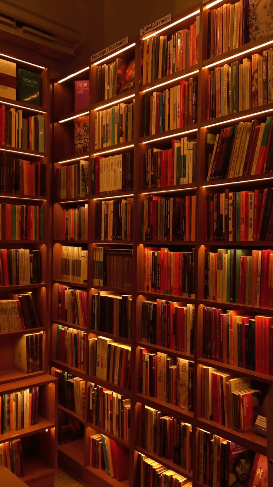
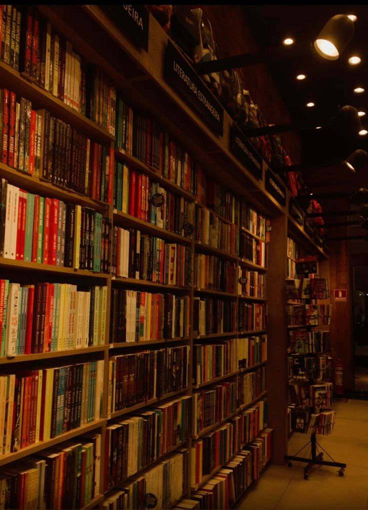

Books
Carefully selected classics and Sereign curated editions designed for deeper understanding.
Explore BooksTHE DIGITAL SANCTUARY
A digital sanctuary for timeless knowledge and human expression.
Sereign Archives was created as a bridge between classic literature, modern digital experiences, and personal reflection.
We preserve meaningful works, transform complex ideas into accessible summaries, and provide readers with an elegant space to explore books and poetry.
Every archive is designed to feel like entering a private library, where knowledge, creativity, and imagination exist together.
THE SANCTUARY
A carefully designed digital environment inspired by traditional libraries.


Carefully selected classics and Sereign curated editions designed for deeper understanding.
Explore BooksOriginal poetry archives capturing emotions, memories, and human experiences.
Read Poems"Books preserve the thoughts of those who came before us. Poetry preserves the feelings we never learned to express."